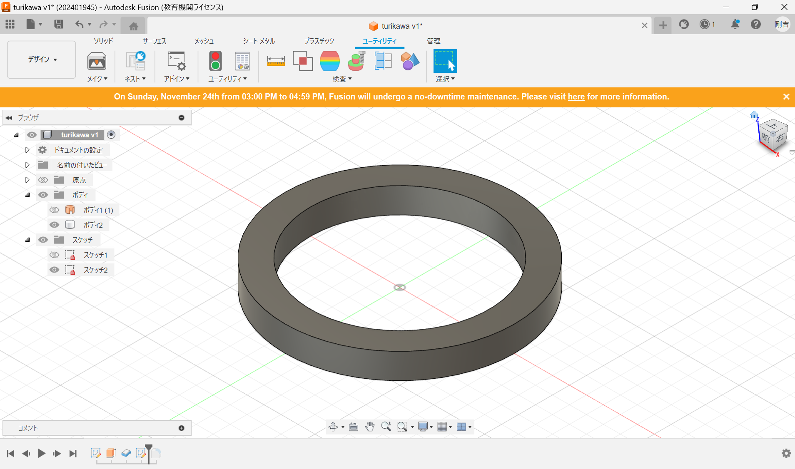
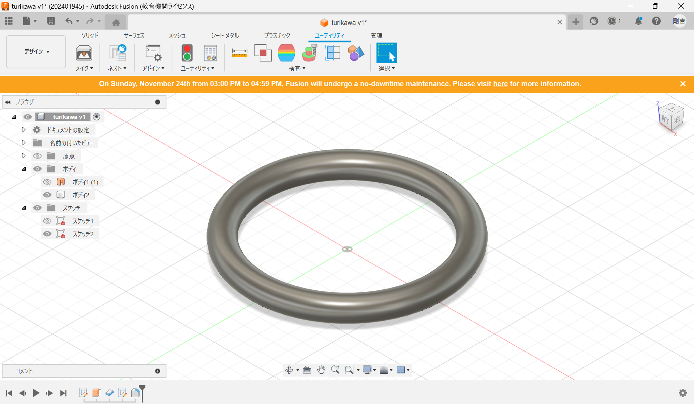
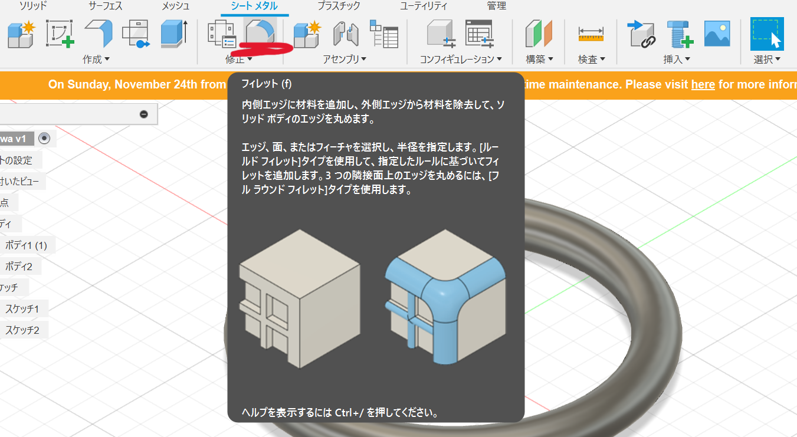

design for others
テーマ：電車の中で筋トレしている人
このテーマにそって私が作りたいと思ったものはどこにでもつけれる
つり革です。この人がなぜ電車にこだわるのかを考えたところ電車の
つり革が好きであえてやっていると考えて制作しようとしました。
どこにでもつり革
これを作るのにあたって最初に本物のつり革をよく見てみた。
改めて見るとつり革には大きく三つのパーツにわかれていて、一番
上にはパイプ、次にひも、最後にいつもつかんでいる丸い部分です。
パイプのところをカラビナにすると自分の好きなところに引っ掛けられる
ようになります。ここで、私が作る必要があると思ったものは下の丸い部分
です。そこを3Dプリンターで作りました。


完成品

制作で気づいたこと
この形を作るうえで一番困ったことはどうしたら丸みを持った形が作れるのかです。

こんな感じで丸みを作るのに使ったのは、フィレットという機能です。

使用機材
班員のurl